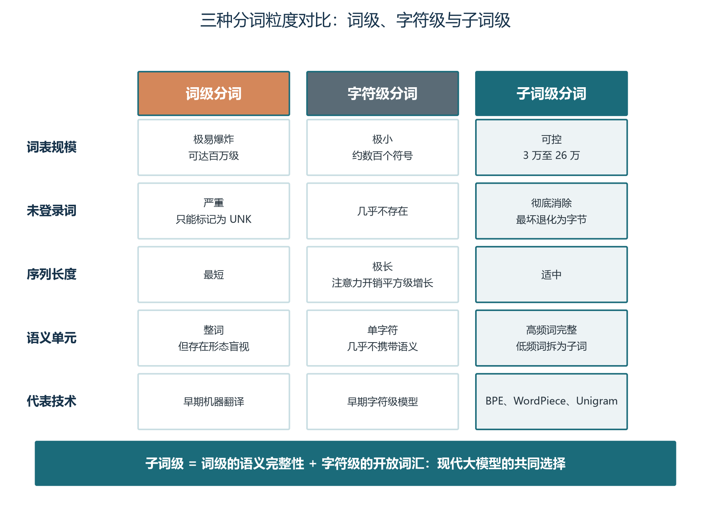
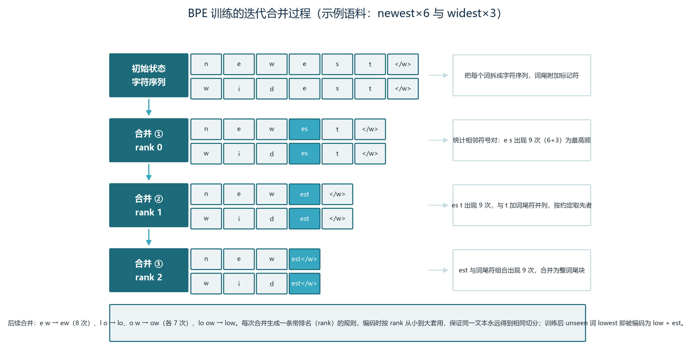
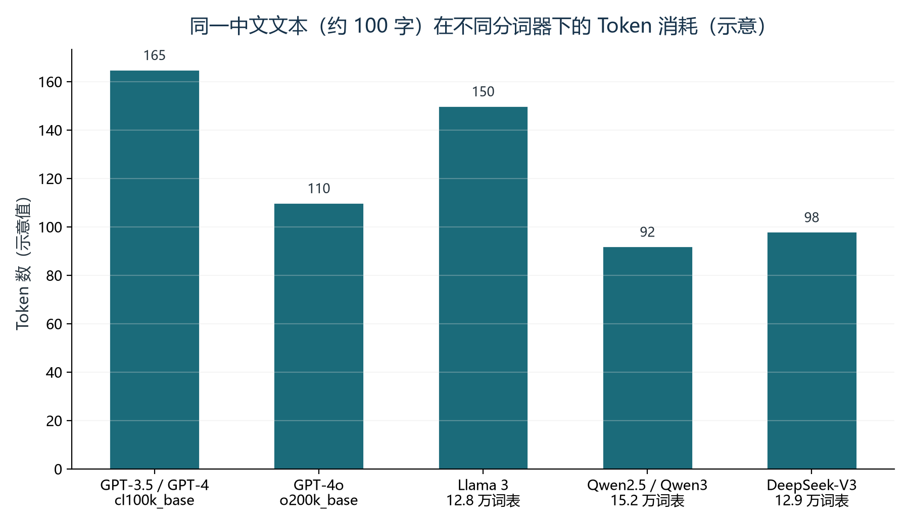
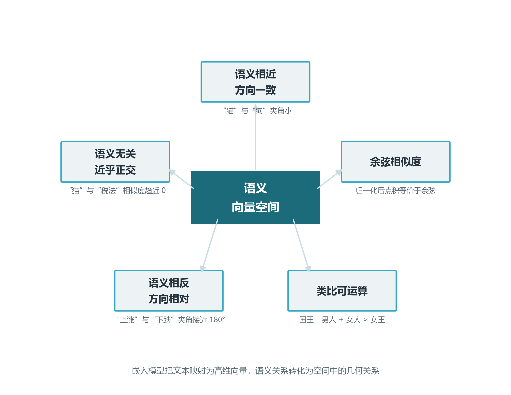
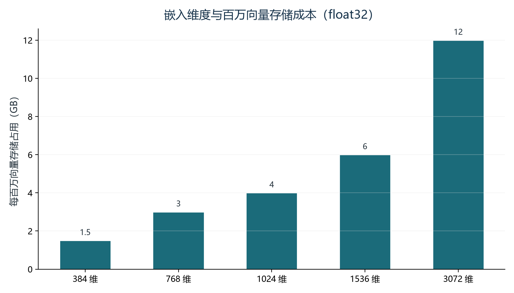

前言：从字符到几何——模型的两道隐形关卡
上一卷我们钻进了 Transformer 的内部，看懂了自注意力如何让每个 token 在全局视野中聚合信息。但那个讲解其实跳过了开头的关键一步：当一段文字送进模型之前，它必须先被切成 token，并被映射成一串数字。分词（Tokenization）与嵌入（Embedding），正是这两道隐形关卡。前者把连续的自然语言切碎成模型能处理的离散符号，后者把这些符号投射到高维几何空间，变成可计算、可比较、可检索的向量。理解这两关，是理解后续每一卷的工程决策——为什么 RAG 的检索召回总差一口气、为什么中文 API 账单总是超出预期、为什么同一个问题换模型效果就变——的前提。
把视角拉高一点，整套 Agent 技术栈的底层都建立在这两关之上。提示词工程的本质，是在分词阶段把信息编码成模型偏好的 token 序列；RAG 的召回与重排序，本质上是在嵌入空间中做几何近邻搜索；记忆系统压缩上下文的边界，也往往落在 token 而不是字符上；甚至跨模型迁移的隐性成本——20% 到 30% 的账单波动——也直接由分词器差异造成。换句话说，分词与嵌入不是“实现细节”，而是“架构级决策”。把它们当细节看待的人，会在每一个上层技术栈里反复为它买单。
本卷共五章。第一章解释为什么模型不认识“字”，并梳理字符级、词级、子词级三种粒度的演进逻辑；第二章深入 BPE、WordPiece、SentencePiece、tiktoken 四大主流算法，配以手工演示与代码示例，让你能在团队里讲清每种算法的合并策略；第三章剖析“中文税”现象，用真实数据量化成本影响，并给出可操作的应对策略；第四章讲解嵌入表示，把“语义相似度 = 空间距离”这个直觉从口号变成工程语言；第五章专门讨论维度选型与 Agent 场景下的嵌入模型选择，为卷08、卷09 的 RAG 与向量库打下基础。
学完本卷，你将能够：
- 解释为什么子词方案成为主流，以及 BPE 与 WordPiece 的核心差异（频率最大化 vs 似然最大化）；
- 用一段代码演示 BPE 合并过程，并能在团队里讲清字节级 BPE 如何彻底消除 OOV；
- 量化“中文税”带来的成本差异，给出选型建议与上下文预算调整方案；
- 解释上下文相关嵌入与静态嵌入的根本差异，说清对比学习为什么是现代嵌入模型的训练引擎；
- 根据业务场景在 768/1024/1536/3072 之间做出有理有据的维度决策，并理解 Matryoshka 表示学习的工程价值。
本卷有几段代码（BPE 合并演示、tiktoken 计数、相似度计算），都不超过二十行，建议边读边在 Python REPL 或 Notebook 里跑一遍，体感远胜默读。术语方面，BPE、WordPiece、Unigram、Matryoshka、MTEB 等名词会反复出现，第一次出现时配了类比，后面章节只做引用不再展开定义。卷08（知识篇·RAG）和卷09（存储篇·向量数据库）会用到本章的嵌入与维度知识，建议在开始卷08 前把第四、五章读熟。
第一章 为什么模型不认识“字”：分词的必要性与粒度演进
1.1 模型只认数字：分词的本质
一切从这句话开始：你给 ChatGPT 输入的“人工智能”四个字，模型看到的不是字，而是两个整数 ID（比如 92543、92728）。从连续的自然语言到离散整数序列的转换，由分词器（Tokenizer）完成；之后，每个 ID 通过嵌入矩阵（Embedding Matrix）查表得到一个高维向量，这才进入神经网络的计算空间。两步看似平淡，却决定了模型“看见”的语言结构、推理成本与多语言能力。这不是工程细节，而是整个大模型大厦的第一块砖——拆掉它，上面所有的 Transformer 层都会失去着力点。
为什么一定要离散化？神经网络的运算是矩阵乘法和非线性变换，这些运算只能作用在数值张量上，无法直接处理任意长度的字符串。即使能处理，连续值也无法用查表的方式构建稳定的“词汇语义库”，模型就失去了把相似词聚在一起、把无关词推远的离散锚点。分词提供了这样的锚点：每个 token 对应一个固定 ID，对应嵌入矩阵中的一行向量，语义相似的词可以在向量空间中彼此靠近、形成几何关系。这是后续所有语义理解的物理基础。
反过来想：跳过分词直接让模型吃字符序列也不是不行，但字符粒度太小，单个字符几乎不携带语义（汉字稍微好些，英文“c”本身无意义），模型需要从极长序列中重建语义结构，计算成本与训练难度都会飙升。在分词问题上，工程师其实是在“词的语义完整性”和“字符的开放性”之间反复寻找平衡。三十年的 NLP 史，本质就是这段平衡木上的演进史。
1.2 三种粒度：字符级、词级、子词级
第一种方案是字符级（Character-Level）分词：每个字母或汉字视为一个 token。优势是词表极小（英语约 100 个字符，中文常用字约 3500 个），几乎不存在未登录词（OOV）；致命缺陷是单个字符不携带语义，模型要从极长的字符序列里重建词边界，长度爆炸导致注意力计算开销巨大。在 Transformer 这种注意力计算量随序列长度二次增长的架构里，字符级方案几乎不可用。
第二种方案是词级（Word-Level）分词：以空格或标点切分，每个完整词对应一个 token。语义最丰富，但面临三大难题。一是词汇表爆炸——英语在用词汇约 17 万个，加上屈折变化、专有名词、技术术语，大型语料极易产生超过 100 万个独立 token，嵌入矩阵撑爆显存。二是 OOV 问题严重，任何不在词表中的词都会被映射为统一的 UNK（unknown），造成信息丢失。三是形态盲视——run、runs、running、runner 被视为四个完全无关的符号，无法共享语义。这三个问题在词级方案里几乎是结构性的，没有工程补丁能彻底解决。
第三种方案是子词级（Subword-Level）分词：高频词保持完整（如 the、is），低频词拆分为有意义的子单元（如 unbelievable 拆成 un + believ + able）。这条路径既控制了词表大小（通常 30K 到 200K），又彻底解决了 OOV 问题——任何文本最坏情况下都可退化为字符序列。这种“退可守、进可攻”的性质，让子词方案从 2016 年开始逐步统一了 NLP 领域，到 2018 年 BERT 之后成为事实标准。理解子词方案的内在权衡，就理解了现代大模型分词器设计的出发点。

1.3 一个直观的代价对比：同一句话的三种切法
用一个具体例子建立量化直觉。假设输入句子“unbelievable happiness”共 22 个字符。在字符级方案下，每个字符一个 token，总计 22 个 token，但语义信息被切得支离破碎；在词级方案下，整句只有 2 个 token，但 unbelievable 在词表里若不存在就直接被替换为 UNK，词形信息丢失；在子词级方案下，假设词表已经学过 unbelievable，可能切成 un + believ + able 共 3 个 token，再加 happiness 共 1 个 token，总计 4 个 token，语义信息与开放性兼得。
这段对比里藏着两个工程上极为重要的细节。其一，注意力计算随序列长度二次增长——22 个 token 要算 484 对关系，4 个 token 只需 16 对，性能差距是数量级的。其二，嵌入矩阵的显存占用与词表大小成正比——词表 1 万和词表 10 万，矩阵大小相差 10 倍。子词方案的精妙之处在于：词表只比字符级稍大（因为允许组合），但序列长度却接近词级，实现了“语义密度”和“序列效率”的双重优化。这正是 2016 年之后几乎所有大模型都选择子词方案的根本原因。
1.4 子词方案为何成为主流：一篇 2016 年论文的连锁反应
2016 年，爱丁堡大学的 Rico Sennrich、Barry Haddow 和 Alexandra Birch 在 ACL 上发表了奠基性论文《Neural Machine Translation of Rare Words with Subword Units》，将原本用于数据压缩的 BPE（Byte Pair Encoding）算法改造为子词分词方法。论文的写作背景是神经机器翻译，但其方法直接演化为今天 GPT、Claude、Llama 等几乎所有大模型的分词基石。从一篇论文到全球 NLP 基础设施的统一标准，这种“跨领域方法迁移”的力量，正是技术演进的典型范式。
子词方案能成为主流，有三个相互强化的原因。第一，它优雅地化解了词级与字符级方案的根本矛盾——既保留了词级方案的语义完整性，又具备字符级方案的开放词汇能力。第二，Transformer 架构的注意力机制计算量随序列长度呈 O(n²) 增长，子词方案在保持语义完整的同时大幅缩短了序列长度，成为效率与表达力的最佳折衷。第三，开源生态的飞轮效应——HuggingFace 的 tokenizers 库把 BPE、WordPiece、Unigram 等算法封装成统一接口，任何模型都可以复用，新模型只要复用现成词表即可快速上线，工程门槛进一步降低。
从字符级到子词级的演进，并不是“新技术取代旧技术”那么简单。每一次演进都对应一组新的工程难题：词级方案催生了 OOV 问题与词形盲视，子词方案则带来了词表大小与序列长度的二维权衡、训练语料的语言偏差（中文税的源头）、以及训练不足的 Glitch Token 风险。理解这段历史，比记住任何一种算法都重要。
第二章 子词算法详解：BPE、WordPiece、SentencePiece 与 tiktoken
2.1 BPE：从数据压缩到 NLP 的跨界明星
BPE（Byte Pair Encoding，字节对编码）最初由程序员 Philip Gage 于 1994 年在《C Users Journal》上发表，原本是一种简单的数据压缩方法：扫描文本，找到出现最频繁的相邻字节对，用一个新符号替换它，反复迭代。2016 年，Sennrich 等人将其引入 NLP 领域，使这个默默无闻的压缩技巧在 22 年后成为现代大模型的语言基石。从压缩算法到 NLP 基础设施的跨界之旅，是“方法迁移创新”的经典案例。
BPE 的核心思想可以一句话概括：从字符级别出发，通过频率驱动的方式迭代合并最频繁出现的相邻符号对，逐步构建子词词表。其结果是高频词被完整保留（如 the、is），低频词被拆分为有意义的子词（如 unhappiness 拆为 un + happi + ness），理论上永远不会出现 OOV——任何文本都可以被拆成基础字符的组合。这种“频率驱动 + 迭代合并”的策略，简单、可解释、可工程化，是它能被大规模采用的根本原因。
2.1.1 BPE 训练流程：四步迭代
BPE 的训练是一个确定性的迭代合并过程，具体分四步。第一步初始化：将词表初始化为语料中所有出现过的字符集合，把每个词表示为字符序列并在末尾添加词结束符（如 /w），用于区分词内字符与词尾字符。第二步频率统计：统计语料中所有相邻符号对的出现频率。第三步合并操作：将频率最高的符号对 (a, b) 合并为新符号 ab，加入词表。第四步迭代重复：重复第二步与第三步，直到词表达到预设大小。合并次数是唯一的超参数。
每次合并都会获得一个 rank（排名）——第一次合并为 rank 0，第二次为 rank 1，依此类推。最终生成的有序合并表就是词表的核心。这个有序结构不仅决定了训练结果，还决定了推理时的编码行为：相同单词始终以完全相同的方式分词，因为推理过程严格按照 rank 顺序应用合并规则。确定性，是 BPE 在分布式推理与缓存优化中能稳定工作的基础。
2.1.2 一个手工演示：六步合并看清楚
用一个极简语料演示六步合并过程。假设词表包含四个词及其频率：low（5 次）、lower（2 次）、newest（6 次）、widest（3 次）。初始时所有词都已字符化（如 low 表示为 l o w /w）。第一步，统计相邻字符对频率：e s 出现 9 次（newest 的 6 次 + widest 的 3 次），e w 出现 8 次，l o 出现 7 次，o w 出现 5 次加 2 次共 7 次，等等。算法选择最高频的 e s 合并为 es。第二步重新统计，发现 es t 出现 9 次，est 成为新的合并。第三步合并 l o 为 lo。第四步合并 lo w 为 low（此时 low 与 lower 前缀共享）。第五步合并 n e 为 ne。第六步合并 ne w 为 new。整个过程走完，词表里多出了 es、est、lo、low、ne、new 等子词。
这个例子虽然简单，但包含了 BPE 的全部精髓：合并是基于全局频率的贪心策略，不依赖任何语义标注；每次合并都生成一个稳定的中间符号，对后续合并可见；最终词表是“语料的统计画像”，并不严格对应语言学词素。这种“统计形态学”虽然不能保证每个子词都有语言学意义，但在自然语言这种高冗余度的信号上，已经足够捕捉到绝大多数有用的组合模式。
2.1.3 推理时的编码：按 rank 顺序应用
BPE 编码过程有一个常被忽略的关键细节：推理时不是“查找当前字符串中最频繁的符号对”，而是按 rank 顺序应用合并规则。具体步骤是：扫描符号序列，查找合并表中列出的任何符号对；选择具有最低 rank（最早学到的合并）的符号对；应用该合并；重复上述过程直到没有更多合并可应用。这种优先级纪律确保相同单词始终以完全相同的方式分词——编码过程是确定性的且顺序无关的。理解这一点，对调试分词器的边界情况（比如为何同一个 emoji 在不同位置会被切成不同 token）至关重要。
2.1.4 字节级 BPE：彻底消除 OOV 的关键创新
GPT-2 引入了一项关键创新——字节级 BPE（Byte-Level BPE）：不再以字符为基本单元，而是以 UTF-8 字节（共 256 个）作为基础词汇表。这一设计彻底消除了 OOV 问题——任何 Unicode 文本都可以表示为字节序列，因此任何语言的任何字符都能被编码。具体实现中，GPT-2 使用了一个 bytes_to_unicode 映射函数，将 256 个字节值中不可打印的 ASCII 控制码（0x00 到 0x1F）移至更高的 Unicode 范围，使合并表只涉及可打印码点。这就是为什么在 GPT-2 的词表中，空格开头的 the 显示为 Ġthe——Ġ 是空格字节 0x20 被重映射后的占位字符。
字节级 BPE 的一个实际效果是：在 GPT-2 中，一个 emoji 需要消耗 4 个 token（每个 UTF-8 字节一个），而在词汇表更大的 o200k_base 中，常见 emoji 可能只需 1 个 token。这个差异看似细微，对 emoji 重度使用的对话场景来说就是实实在在的成本波动。理解字节级 BPE，是理解现代大模型分词器多语言能力的关键。

2.2 WordPiece：似然最大化取代频率最大化
WordPiece 是 Google 开发的子词分词算法，最早由 Schuster 和 Nakajima 于 2012 年提出，用于日语和韩语的语音识别任务，后被 BERT（Devlin et al., 2018）采纳为默认分词器。WordPiece 与 BPE 在整体流程上高度相似——都从字符级词表出发，通过迭代合并构建子词词表。核心区别在于合并标准：BPE 选择出现频率最高的字符对进行合并，而 WordPiece 选择合并后使训练语料的语言模型似然（Likelihood）提升最大的字符对。
翻译成直觉：BPE 看的是“这两个符号出现得多不多”，WordPiece 看的是“这两个符号放在一起有多出乎意料”。WordPiece 的评分公式为 freq(ab) / (freq(a) × freq(b))，这等价于选择点互信息（PMI）最高的二元组。一对符号被合并，不仅因为它频繁出现，更因为它出现的频率高于其组成部分各自频率所预期的程度——这捕捉的是真正的搭配关系和形态学模式，而非简单的频繁字符序列。研究表明，WordPiece 趋向于产生比 BPE 更具语言学动机的分词结果，词边界更接近人类语言学家的人工切分。
WordPiece 使用 ## 前缀来标记词内续接的子词，以确保解码时能无歧义地还原词边界。例如 playing 切成 play + ##ing，unbelievable 切成 un + ##believ + ##able。##ing 表示“ing”是一个续接子词（前面有其他子词），解码时将 ## 前缀去除并直接拼接即可还原原词。这一机制与 BPE 的 /w 词尾标记、SentencePiece 的 ▁ 空格标记异曲同工，都是为了在 token 序列中保留词边界信息。在编码阶段，WordPiece 采用贪心最长匹配策略：在每个位置找到词表中最长的匹配子词，消耗它后继续处理剩余部分，找不到匹配则回退到字符。BERT 使用一个包含 30,522 个 token 的 WordPiece 词汇表（英文版），这一数字也成为后续很多编码器模型的参考基线。
2.3 SentencePiece：语言无关的无损分词
BPE 和 WordPiece 都有一个隐含假设：输入文本已经按空格切分为词。这一假设在英语等以空格分词的语言中成立，但在中文、日文等不以空格作为词间分隔的语言中并不适用。SentencePiece 由 Google 的 Taku Kudo 和 John Richardson 于 2018 年开发，正是为了解决这一根本局限。它的核心设计理念是语言无关和无损分词（Lossless Tokenization）：将输入文本视为原始 Unicode 字符流（包括空格），直接在其上学习子词单元，无需任何语言特定的预分词步骤。
具体而言，SentencePiece 将空格替换为元符号 ▁（U+2581，下八分之一方块），并将其作为普通字符在训练时与其他字符同等对待。这一设计保证了分词的完全可逆性：原始文本可以通过简单的字符串操作从 token 序列中完美还原（拼接后把 ▁ 替换回空格）。这种无损特性，使得 SentencePiece 在跨语言场景下特别受欢迎——任何语言都能用同一套算法处理，无需为每种语言定制预分词器。
SentencePiece 框架内实现了两种子词分词算法：BPE 模式和 Unigram 语言模型模式。Unigram 语言模型由 Kudo 于 2018 年提出，采用与 BPE/WordPiece 完全相反的思路：它不是从字符级词表逐步合并，而是先构造一个大的初始词表（如语料中所有出现的子串），再逐步删除使语料似然下降最小的子词，直到词表达到目标大小。一个重要优势是 Unigram 模型允许概率分词——同一段文本可以有多种有效分词方式，每种有不同的概率。这启用了子词正则化（Subword Regularization）技术：在训练时为同一段文本采样多种分词方式，增强模型对分词噪声的鲁棒性。需要指出的是，Unigram 模式运行效率相对较低，实际使用中采用该模式的人较少；Llama 3 等新一代模型已从 SentencePiece 转向 tiktoken 风格的字节级 BPE，但 SentencePiece 在多语言场景中的地位依然重要。
2.4 tiktoken：字节级 BPE 的工业级实现
tiktoken 是 OpenAI 于 2022 年底开源的高性能 BPE 分词库，采用 Rust 后端实现，是所有 OpenAI 模型的生产级分词工具。它以字节为基本操作单元，将原始 BPE 算法完全重构为基于字节的操作，天然支持任意 Unicode 文本——包括中文、阿拉伯文、emoji、控制字符甚至二进制数据。在典型基准测试中，tiktoken 比 HuggingFace 的 transformers Python 分词器快 3 到 6 倍，比纯 Python 实现的 minBPE 快 50 倍以上。所有编码规则以不可变常量形式硬编码，使得 encode() 和 decode() 操作均可在 O(n) 时间复杂度内完成，实测性能可达每秒数百万 token 处理量。
tiktoken 随库发布了多套编码方案，对应不同的 OpenAI 模型版本。r50k_base 或 p50k_base（约 50K 词表）服务于 GPT-3 与 Codex 系列；cl100k_base（约 100K 词表）服务于 GPT-3.5-turbo、GPT-4、GPT-4-turbo、text-embedding-3 系列；o200k_base（约 200K 词表）于 2024 年 5 月随 GPT-4o 发布，将词表翻倍，明确目标是提升非英语效率——根据 OpenAI 的数据，o200k_base 使中文分词效率提升约 1.4 倍，日文 1.4 倍，韩文 1.7 倍，而英文基本保持稳定。
多语言效率的提升可以在同一句话的对比中清晰看到。同一句中文，GPT-2（50K 词表）需要 53 个 token，cl100k_base 降至 30 个，o200k_base 进一步降至 15 个——更大词表终于有空间将常用汉字保持为单个 token。印地语改善最为显著，从 78 个降至 22 个，因为天城文每个可视字符是多码点的，旧分词器被迫逐字节拼写。理解这套效率演进曲线，是后续理解“中文税”和模型迁移成本的关键基础。
tiktoken 的核心工程价值在于：它包含与 OpenAI 服务器完全相同的分词逻辑，使得开发者可以在调用 API 之前精确预测 token 数量和成本。在 tiktoken 出现之前，开发者只能用粗略的字符比率估算（误差常达 20% 到 40%），或先调用 API 再承担超额费用。下面这段十行代码展示了用 tiktoken 统计文本 token 数的最小范式，也是 Agent 项目成本监控栈的标配：
import tiktoken
# 1. 按模型名获取编码器（与 API 计费完全一致）
enc = tiktoken.encoding_for_model("gpt-4o")
print(f"编码方案: o200k_base, 词表大小: {enc.n_vocab}")
# 2. 编码与解码
text = "人工智能正在改变世界。"
tokens = enc.encode(text)
print(f"原文: {text}")
print(f"Token IDs: {tokens}")
print(f"Token 数: {len(tokens)}")
print(f"解码还原: {enc.decode(tokens)}")还需要注意 tiktoken 的安全使用细节。tiktoken.encode() 默认会将特殊 token（如 <|im_start|>）视为禁止项并抛出异常，防止用户消息中伪造对话边界；而 encode_ordinary() 方法则不做此检查。生产环境应始终使用 encode() 并显式指定 disallowed_special 参数。这一条规则看上去不起眼，但它直接关系到提示词注入防护——让用户输入中包含伪装的“系统提示开始符”，是最常见的越权攻击手法之一。
2.5 主流模型分词器横向对比
把视野拉到主流模型，可以清晰看到“词表越来越大”的整体趋势。GPT-3/Codex 用 r50k_base 约 50K；GPT-4/GPT-3.5 用 cl100k_base 约 100K；GPT-4o/o1 用 o200k_base 约 200K。Llama 系列最有代表性：Llama 1/2 使用 SentencePiece BPE 仅 32K 词表，Llama 3 在 2024 年切换到 tiktoken 风格并扩展到 128K，Llama 4 进一步扩展到 202K。Qwen 系列采用自研字节级 BPE，Qwen2.5/3 约 152K，是中文优化最彻底的分词器之一。DeepSeek-V3 用 129K 词表，针对代码和数学符号做了专门扩充。Gemini/Gemma 3 用 SentencePiece 达到 262K，是当前已知最大的词表。三年来词表规模增长约 8 倍，这条增长曲线背后是“更大词表产生更短 token 序列”和“更多语言覆盖”这两个持续强化的工程诉求。
反向操作也存在。Anthropic 的 Claude 系列采取反直觉的“瘦身”策略：Claude Opus 4.6 词表约 65K，2025 年发布的 Opus 4.7 进一步缩减，把原本编码为单个 token 的术语（transformer、artificial intelligence、SELECT、TypeError、hypothesis、Claude 等）拆成更多 token。官方解释这一变化的目标是“更字面的指令遵循”，认为更细粒度的 token 切分能迫使注意力覆盖到每一个单词。实际使用中 token 数增幅约 1.0 到 1.35 倍，Anthropic 自身也承认这会提高单位任务成本。这是“词表大就好”共识之外的一个反例，说明分词器设计是模型设计哲学的延伸，没有标准答案。
| 模型 | 分词器 | 词表大小 | 中文效率 | 发布时间 |
|---|---|---|---|---|
| GPT-4o/o1/GPT-5 | tiktoken (o200k_base) | 约 200K | 高 | 2024-2025 |
| GPT-4/GPT-3.5 | tiktoken (cl100k_base) | 约 100K | 中 | 2023 |
| Claude Opus 4.7 | 自研 BPE | 约 65K（缩减） | 中 | 2025 |
| Llama 4 | tiktoken-based | 202,048 | 高 | 2025 |
| Llama 3 | tiktoken-based | 128,256 | 较高 | 2024 |
| Llama 2 | SentencePiece BPE | 32,000 | 低 | 2023 |
| Qwen3/Qwen2.5 | Custom BBPE | 151,936 | 极高 | 2025 |
| DeepSeek-V3 | Custom BPE | 129,280 | 高 | 2024 |
| Gemini 3/Gemma 3 | SentencePiece Unigram/BPE | 262,144 | 高 | 2025 |
这张表是后续章节讨论“中文税”和模型迁移成本的基础工具。建议把它打印出来贴在工位上，每次接到新模型选型任务时先查一遍。三条记忆口诀：第一，OpenAI 阵营走 tiktoken 路线，词表越来越大；第二，Anthropic 反其道而行，词表小而精；第三，国产模型（Qwen、DeepSeek）从源头解决中文效率问题，是中文场景的首选。
第三章 “中文税”：一个被低估的工程账单
3.1 一个反直觉的事实：中文比英文“贵”
业界流传一种说法——“汉字信息密度高，中文应该比英文省 token”。实测数据完全推翻了这一直觉。Mason AI Lab 使用 OpenAI 官方 tiktoken 对六种不同类型任务（短指令、商业文章、翻译、企划书、程序注释、创意文案）的实测表明：同样语义的内容，中文在现代 LLM 上比英文多消耗 1.1 到 1.6 倍 token，日文更高达 1.3 到 2.2 倍。该研究还引用了 200 万句专业人工翻译对照的学术数据：中文平均 token 倍数为 1.76x，粤语 2.10x，日文 2.12x，韩文 2.36x——CJK 语言全部多吃 token，无一例外。这种现象被业内称为“中文税”。
现象背后的根因是分词器训练语料的语言分布。BPE 通过合并高频字符对来构建词表，如果训练语料以英文为主，大部分词表条目代表英文子词，中文字符因出现频率低而获得较少词表条目。同样的 1000 个字符，GPT-4（cl100k_base）下英文约需 1300 token，而中文高达 1800 token；针对中文优化的 Qwen 则英文约 1400 token、中文仅 900 token。词表里的“不平等”，直接转化为计费上的“不平等”。这不是模型偏见，是训练数据的统计画像。
3.2 分词器世代差异：o200k_base 的进步
分词器世代对中文效率影响巨大。cl100k_base 时代，中文相对英文倍数在 1.6 到 2.5x 之间；o200k_base 时代，这个倍数降至 1.1 到 1.6x，相当于把中文税削减了约 40%。以“人工智能技术发展”这八个字为例，cl100k_base 需要约 14 到 16 个 token，而 o200k_base 仅需约 8 到 10 个。o200k_base 的中文优化不是“装饰性”，而是把每千字的中文成本实实在在地砍掉了三分之一以上。
各模型的横向对比更清晰地展示了“分词器决定成本”这一规律。36 氪用 22 段平行文本（含商业新闻、技术文档、古文、日常对话等）对 5 个模型做了系统性测试。Claude Opus 4.6 及之前全系列，中文 token 消耗的 cn/en 比值范围在 1.11x 到 1.64x 之间，最极端场景出现在 NYT 风格商业新闻——同一段内容，中文版要多消耗 64% 的 token。GPT-4o 好一些，cn/en 比值多数落在 1.0 到 1.35x 之间。但 Qwen 和 DeepSeek 完全逆转了这一格局：两者的 cn/en 比值大面积低于 1.0，DeepSeek 最低做到 0.65x——同一段话中文版比英文版便宜三分之一。这种逆转的根本原因，是 Qwen 和 DeepSeek 从设计之初就将高频汉字和词组作为整体 token 写入词表，从源头解决了中文税问题。

3.3 “中文税”的经济学影响
Token 是 API 计费的基本单位，token 数量直接等于成本。举一个直观的数字例子：假设某企业每月处理 1000 万 token 的中文内容，使用 GPT-4o（输入 2.5 美元/百万 token），如果切换到 Qwen 或 DeepSeek，中文 token 消耗可降低约 35%，月度成本可从 25,000 美元降至约 16,250 美元——仅分词器选择一项就能带来每年超过 10 万美元的成本节省。对个人开发者，月度账单或许只是几美元到几十美元的差异，但对调用量上亿的中重度产品，这就是“车型”与“车系”的差异。
更隐蔽的影响在上下文预算层面。对于面向中文用户的产品，工程师需要在系统提示与上下文组装阶段预留 50% 以上的冗余——同样是 8K 上下文窗口，中文实际承载的信息量可能只有英文的六成。如果你按英文场景设计上下文大小，中文场景会频繁触发窗口溢出，导致模型“忘了前文”。Claude Opus 4.7 的新分词器引发了另一场有趣的“英文通胀”：英文 token 数膨胀了 1.24 到 1.63 倍，但中文维持在 1.000 几乎没变。原因可能是中文在旧版上已经被切到了单字颗粒度，可拆分空间极小。这从侧面印证了分词器设计对成本与上下文利用率的双重决定性影响。
3.4 工程应对策略：四招破解中文税
既然中文税的根因是“分词器训练语料的语言分布”，工程上的应对策略就应当围绕“分词器选型 + 上下文预算 + 提示词设计”三个层面展开。第一招是优先选用中文原生分词器：Qwen、DeepSeek、文心一言、智谱 GLM 等国产模型从设计之初就把高频汉字作为完整 token，cn/en 比值大面积低于 1.0，是中文场景的首选。如果业务必须使用 GPT 或 Claude，应优先选择支持 o200k_base 的 GPT-4o 或更新的模型，比 cl100k_base 的 GPT-3.5 节省 40% 的中文 token。
第二招是动态预算调整。中文场景下的上下文窗口设计要单独计算：32K 窗口在英文场景能承载约 24K 词的信息密度，但在中文场景可能只承载约 16K 字（按 2 字/token 估算）。建议在团队内部建立“中文 token 预算表”，把系统提示、检索上下文、对话历史、用户输入、输出预留等部分的中文 token 数单独核算，避免按英文经验值偷懒。第三招是提示词精炼：中文冗余表达多（“请帮我”/“麻烦您”/“非常感谢”等礼貌语占用大量 token），工程上应通过结构化模板压缩表达，把常用礼貌语预编译成单 token 的占位符。
第四招是缓存友好设计。中文长对话中，系统提示、Few-shot 示例等静态内容占据了大量 token。利用 KV Cache 把静态内容放在动态内容之前，使多个请求共享相同前缀，可以避免重新计算——这部分优化在卷五（推理优化）会详细展开，此处只需知道：中文场景下 KV Cache 命中率提升 10%，账单就能降 8% 到 12%，因为中文 token 单价本来就比英文高。把这四招组合起来，中文场景下的总成本可以比“直接用英文模型”方案降低 30% 到 50%，而这种成本优势不会换来任何能力损失，因为底层的中文语义理解能力并未退化。
3.5 Glitch Token：被忽视的隐藏成本与安全风险
中文税之外，还有一种更隐蔽的成本——Glitch Token。2023 年初，LessWrong 社区的用户偶然发现 GPT-3 一遇到“SolidGoldMagikarp”这串字符就开始输出乱码、自说自话甚至辱骂用户。这个 Reddit 用户名在分词器训练使用的网络爬虫语料中出现频率较高，被 BPE 合并规则固化为一个独立 token；但在模型训练阶段，这些受污染的网页可能被清洗掉或未纳入训练数据，导致该 token 在模型训练中极少甚至完全没出现过——其嵌入向量本质上是随机噪声。国内也发生过类似事件：时代少年团粉丝发现让模型写“时代少年团队长是谁”，模型支支吾吾蹦出错误答案，本质上也是训练不足 token 导致的问题。
Cohere 的研究人员在 EMNLP 2024 上发表的论文《Fishing for Magikarp: Automatically Detecting Under-trained Tokens in Large Language Models》获得了杰出论文奖。研究提出了系统性的三步检测方法：通过分词器分析找出特殊类别的 token，根据模型架构计算识别指标（如 Embedding 向量的 L2 范数），再通过提示验证（如让模型重复给定 token）确认候选是否引发异常输出。研究的关键发现是：训练不足的 token 在主流开源大语言模型中普遍存在，包括 Llama 系列和 Mistral 系列在内，研究人员一口气就挖出了数千个。
在多步 Agent 工作流中，Glitch Token 的风险会被显著放大。它可以绕过基于关键词的安全过滤器、干扰推理链、走私特殊 token——任何基于旧分词器训练的中间件都会通过略微扭曲的透镜查看新模型的输出，决策就基于这个差距做出。Claude Opus 4.7 的新分词器变化在安全层面引发了一场“地震”：新词表意味着新的死区，每一个奇怪的 Reddit 用户名、每一个爬虫抓取的论坛痕迹、每一个滑入新 BPE 合并的特殊 token 近似副本，都是候选 Glitch Token。截至目前尚无学术团队对 Opus 4.7 的词表进行完整的安全扫描。这提醒我们：分词器升级不是平滑过渡，而是需要重新评估安全护栏的硬切换。
把分词器当作“实现细节”是早期项目最常见的误区。在生产级 Agent 系统中，分词器是计费单位、是上下文容量的刻度尺、是 Glitch Token 的源头、是跨模型迁移的隐性成本。把分词器当作“架构级决策”，在选型、迁移、监控、安全四个环节都建立专门的处理流程，才能避免事后补救的高额代价。
第四章 嵌入表示：文字的几何空间
4.1 从整数到向量：嵌入的本质
上一节我们把文字切成 token，分配整数 ID。但整数本身没有语义——“猫”的 ID 是 92543，“狗”的 ID 是 27891，这两个数字之间的算术关系对模型毫无意义。把整数 ID 映射为稠密向量的过程，就是嵌入（Embedding）。具体来说，模型内部维护一张巨大的查找表（Embedding Matrix），词表中的每个 token 对应一个固定长度的向量（如 4096 维），训练过程通过反向传播不断调整这些向量，让语义相近的词在空间中彼此靠近、语义无关的词彼此远离。
这一步看似平淡无奇，但训练过程赋予了这些向量惊人的性质：语义相近的词，在空间中的位置也相邻。“猫”和“狗”的向量靠得很近，“猫”和“微积分”则相距遥远；甚至“国王”减去“男人”再加上“女人”得到的结果，会落在“王后”附近——这就是著名的“king − man + woman ≈ queen”实验。语义被编码成了几何，距离与方向成为语义的物理载体。后续所有的语义检索、相似度匹配、聚类分析，本质上都是向量空间的几何运算。
为什么这一步对 Agent 工程师如此重要？因为 Agent 几乎所有的“记忆与检索”机制都建立在嵌入之上。RAG 系统把文档和查询都嵌入为向量，通过向量近邻搜索找到最相关的段落；记忆系统把历史对话嵌入后存入向量库，下次需要时检索相关片段；推荐系统把用户偏好和物品特征嵌入后计算匹配度。理解嵌入空间的几何性质，才能理解为什么某些检索召回总是差一口气、为什么“语义相似”和“字面相似”在向量空间里是两个维度。

4.2 静态嵌入与上下文相关嵌入的根本差异
嵌入技术经历了三代演进，每一代都解决了上一代的核心局限。第一代是静态词向量时代（2013 到 2017 年），代表是 Word2Vec 和 GloVe。Word2Vec 通过 CBOW 或 Skip-gram 架构，把每个词映射为一个固定向量（通常 300 维）。这种方案的核心局限是“静态”：同一个词在不同上下文中只有一个固定向量，无法处理多义词——例如“苹果”在“吃苹果”和“苹果公司”中含义截然不同，但 Word2Vec 给出的却是同一个向量。第一代模型不适用于句子级别的语义检索。
第二代是上下文动态嵌入（2018 年），代表是 ELMo 和 BERT。ELMo 利用双向 LSTM 语言模型生成上下文相关的词嵌入，使同一个词在不同语境下能够产生不同的向量表示。BERT 则采用 Transformer 编码器架构，通过双向自注意力机制捕捉深层语义，把上下文动态嵌入推向了主流。第二代模型的革命性在于“打通了上下文”：语义不再依赖于单个词的静态映射，而是随着上下文动态调整。这也为后续的 RAG、语义检索等应用打开了大门。
第三代是句级嵌入与对比学习（2019 年至今），代表是 Sentence-BERT、E5、BGE、Qwen3-Embedding。Sentence-BERT 的核心创新是采用孪生网络架构：两个共享权重的 BERT 编码器分别独立处理查询和文档，各自输出一个句向量，再通过相似度函数计算匹配度。这一设计的革命性在于：文档向量可以离线预计算并存储，查询时只需编码一次查询向量、再通过向量相似度检索即可。这使语义搜索的复杂度从 O(n) 次 BERT 前向传播降为 O(1) 次编码加一次近邻查找，把研究技术变成了可落地的工程系统。可以说，Sentence-BERT 是嵌入技术从学术走向工业的转折点。
一句话总结三代演进：Word2Vec（每个词一个固定向量）→ ELMo/BERT（词向量随上下文变）→ Sentence-BERT（句子级语义匹配）→ E5/BGE/Qwen3（大规模对比学习 + LLM 基座 + 灵活维度）。理解这条演进曲线，就理解了为什么 RAG 系统的检索质量在 2022 年之后有了质的飞跃——不是模型变大了，而是嵌入范式变了。
4.3 对比学习：现代嵌入模型的训练引擎
驱动第三代嵌入模型的核心引擎是对比学习（Contrastive Learning）。它的核心思想可以用一句话概括：“拉近正样本，推远负样本”。给定一个锚点文本，模型需要学习一个嵌入空间，使得语义相似的正样本在向量空间中靠近锚点，而语义无关的负样本被推远。与传统监督学习“预测标签”不同，对比学习是“通过比较学习”——模型不预测具体类别，而是学习一种好的表示，使得相似文本的向量距离小、不相似文本的向量距离大。这种范式特别适合嵌入模型，因为它不需要为每种语义细微差别都标注标签，只需能够采样或生成相似和不相似的文本对即可。
对比学习最主流的损失函数是 InfoNCE（Info Noise-Contrastive Estimation），数学表达为：损失 = −log(exp(sim(a, p) / τ) / Σ exp(sim(a, n_j) / τ))，其中 a 是锚点嵌入，p 是正样本嵌入，n_j 是第 j 个负样本嵌入，sim 通常采用余弦相似度，τ 是温度超参数。温度参数控制相似度分数分布的“尖锐程度”：较低的 τ 使模型更激进地推远负样本，聚类更紧凑；较高的 τ 则使分离不那么严格。实践中 τ 通常设为 0.05 左右。
训练效率的关键技巧是批内负样本（In-batch Negatives）。在一个大小为 N 的批次中，每个锚点的正样本是批次内其他样本的负样本，因此 N 个样本可产生 N 个正对和 N(N−1) 个负对，比显式构造三元组高效得多。这也是 E5、BGE 等模型使用大批量（如 32K）训练的原因——更大的批次意味着更多的负样本，对比信号更丰富。然而随机负样本往往是“简单”的——模型轻易就能区分它们，学到的梯度信号有限。难负样本挖掘（Hard Negative Mining）通过刻意挑选那些“语义接近但并非正确答案”的样本作为负例，迫使模型学习更精细的区分能力。研究表明，难负样本在决策边界附近最具训练价值，能够显著增强表示学习的效果。
4.4 主流嵌入模型评测
当前嵌入模型市场呈现“商业 API + 开源模型”双轨并行的格局。OpenAI 的 text-embedding-3 系列是商业 API 的标杆，包含 small（1536 维）和 large（3072 维）两个版本，最重要的技术创新是支持 Matryoshka 表示学习（MRL），允许开发者在单个模型中灵活截断嵌入维度——例如将 3072 维截断为 256 维后，性能仍优于前代 ada-002 模型。OpenAI text-embedding-3-large 在 MTEB 英文基准上得分 64.6，text-embedding-3-small 得分 62.3，定价分别为 0.13 美元/百万 token 和 0.02 美元/百万 token。优势在于 API 稳定、生态成熟、多语言支持良好；局限在于闭源、按调用量计费、上下文窗口仅 8K token。
BGE-M3 是智源研究院 2024 年发布的开源嵌入模型，是首个集多语言（100+ 语言）、多粒度（短文本到 8192 token）、多功能（稠密、稀疏、多向量三种检索）三大特征于一体的语义向量模型。其核心创新是“一次推理同时输出三种检索向量”：稠密向量用于通用语义搜索，稀疏向量类似 BM25 擅长关键词匹配，多向量采用 ColBERT 机制用于细粒度检索。BGE-M3 参数量约 568M，输出维度 1024，已全面开源并支持免费商用许可。
E5-Mistral-7B 是 2024 年发表的一个里程碑式突破——它首次证明解码器-only 的 LLM 也能成为优秀的嵌入模型。方法论上有两个关键创新：一是利用 GPT-4 等强语言模型合成约 50 万条嵌入训练数据；二是以 Mistral-7B 为基座，取最后一层 EOS token 向量作为嵌入，采用标准 InfoNCE 损失结合批内负样本和难负样本，仅用 LoRA（rank=16）微调 1 个 epoch 即达到很好的泛化效果。Qwen3-Embedding 系列是 2025 年开源嵌入模型的性能巅峰，Qwen3-Embedding-8B 以 70.58 分登顶 MTEB 多语言排行榜，性能超越众多商业 API 服务。该系列提供 0.6B、4B、8B 三种参数规模，全面支持 100 多种语言，三大核心特性包括 Matryoshka 维度自定义、指令适配优化和 32K 上下文窗口。
| 模型 | 参数量 | 维度 | 上下文 | MTEB 得分 | 许可协议 |
|---|---|---|---|---|---|
| OpenAI text-embedding-3-large | 未公开 | 3072 | 8K | 64.6（英文） | 商业 API |
| OpenAI text-embedding-3-small | 未公开 | 1536 | 8K | 62.3（英文） | 商业 API |
| BGE-M3 | 约 568M | 1024 | 8K | 约 64.3 | MIT 开源 |
| E5-Mistral-7B | 7B | 4096 | 32K | 约 66.0 | MIT 开源 |
| Qwen3-Embedding-8B | 8B | 4096 | 32K | 70.58（多语言） | Apache 2.0 |
| Qwen3-Embedding-0.6B | 0.6B | 1024 | 32K | 62.34（多语言） | Apache 2.0 |
| Cohere Embed v4 | 未公开 | 768 | 128K | 66.8 | 商业 API |
| Nomic Embed v1.5 | 137M | 768 | 8K | 约 62（英文） | Apache 2.0 |
这张表是选型的起点。务实建议：追求极致性能且资源充足，选 Qwen3-Embedding-8B；需要多模态和超长文档，选 Cohere Embed v4；追求开箱即用和稳定性，选 OpenAI text-embedding-3；中文/多语言检索且需混合检索，选 BGE-M3；资源受限的边缘部署，选 Nomic Embed 或 Qwen3-Embedding-0.6B。选型不是单选题：成熟的生产系统往往是“开源模型本地化 + 商业 API 兜底”的组合，核心流量跑在本地以控成本，长尾或新场景调 API 验证效果。
4.5 MTEB 基准：如何正确解读分数
MTEB（Massive Text Embedding Benchmark，大规模文本嵌入基准）由 SBERT 作者团队于 2022 年提出，旨在解决此前嵌入模型评估碎片化、不统一的问题。在 MTEB 之前，不同论文可能在不同数据集上报告结果，导致模型间难以公平比较。MTEB 涵盖 8 大类任务、56 个以上的数据集，支持超过 112 种语言，包括检索（Retrieval）、重排序（Reranking）、聚类（Clustering）、分类（Classification）、对分类（Pair Classification）、语义相似度（STS）、摘要（Summarization）、双语挖掘（Bitext Mining）。
MTEB 排行榜会展示模型的总平均分和各类任务分项得分，但总平均分不应被视为全部。一个为检索和语义相似度优化（这两类与 RAG 和搜索的生产性能最相关）的模型，可能在聚类或分类上表现不佳，从而拉低平均分。反之，一个在所有任务上表现平稳但不出色的模型，可能平均分更高但在检索上反而更弱。解读 MTEB 时有三条建议：关注与你的任务相关的子任务分数（构建 RAG 系统应重点看检索和 STS 分数，而非总分）、考虑模型尺寸（小模型接近大模型的分数往往更具实用价值）、警惕刷榜（排行榜排名波动大，新提交不断重排顺序，应关注趋势而非某一次的排名）。
对于中文场景，C-MTEB（Chinese MTEB）是必看基准。BGE 系列在 C-MTEB 上长期表现突出（尤其在检索类别），Qwen3-Embedding-8B 以 73.84 分创下新高。中文场景的特殊性在于：中文分词粒度与英文不同、成语和专有名词的语义丰富、中英混合检索的需求——这些都使得不能简单照搬英文 MTEB 的结论。在你自己的业务领域，公开榜单只是起点——必须基于自有数据集做离线验证，卷十五（评估体系）会展开这块内容。
4.6 嵌入模型与生成模型的关系
嵌入模型（Embedding Model）和生成模型（Generation Model）是两类完全不同的模型，但很多初学者会把它们混为一谈。生成模型（如 GPT-4o、Claude）是自回归的语言模型，输出是 token 序列，本质是“给定前文预测下一个 token”；嵌入模型（如 BGE-M3、Qwen3-Embedding）是把文本映射为向量的表示学习模型，输出是一个固定长度的稠密向量。两者的训练目标、模型架构、应用场景都不同，但在现代 Agent 系统中常常协同工作——嵌入模型负责“检索相关信息”，生成模型负责“基于检索结果生成答案”。
一个常见的误解是“嵌入模型越大越好”。事实上，从工程视角看，存在几个关键权衡。其一是推理效率与质量的博弈：8B 模型需要约 16GB 显存运行全精度版本，而 330M 的编码器仅需约 1.3GB；Qwen3-Embedding-0.6B 以 186ms 延迟和 2.1GB 显存提供了接近 BGE-M3 的性能，是性价比的优选。其二是对比微调对通用能力的侵蚀：对 7B LLM 进行对比微调会侵蚀其通用推理和生成能力——梯度只针对池化向量，模型其他能力被“推到一边”。其三是边际收益递减：模型性能与参数规模呈对数线性关系，从 1B 到 3B 提升约 2.3%，3B 到 7B 仅提升 1.1%，7B 到 13B 仅提升 0.7%。超过特定阈值后，继续放大参数的性价比急剧下降。
因此业内观点认为，并非所有场景都需要最大的模型。轻量级编码器（如 BGE-M3、Nomic Embed）在多数 RAG 场景中已足够优秀，而大参数模型更适合需要极致语义理解、长文档处理或多语言覆盖的高难度场景。一个务实的策略是“小模型召回 + 大模型/交叉编码器重排”的两阶段架构：第一阶段用轻量模型快速检索 top-100 候选，第二阶段用交叉编码器精细排序得到 top-5。这条两阶段范式被 BGE-M3、Qwen3-Embedding 等主流方案默认推荐，也是工业级 RAG 的事实标准。
第五章 嵌入维度与选型：768、1024、1536、3072 的工程逻辑
5.1 为什么常见维度是 768、1024、1536、3072
嵌入模型输出维度的选择并非随意，而是 Transformer 架构约束、GPU 硬件对齐和信息论原理共同作用的结果。第一层约束是 Transformer 架构。注意力机制中模型总维度 d_model 被等分到多个注意力头，每个头操作在 d_head = d_model / h 维子空间上。原始 Transformer 论文将 d_head 设为 64，这一选择在表达能力、并行效率和数值稳定性之间取得了良好平衡，此后成为近乎通用的默认值。因此，嵌入维度本质上是“头数 × 64”的乘积：384 = 6 × 64，768 = 12 × 64，1024 = 16 × 64，1536 = 24 × 64，3072 = 48 × 64。这条数学约束解释了为什么这些“整数感很强”的维度反复出现。
第二层约束是 GPU 硬件对齐。现代 GPU 的 Tensor Core 以固定 tile 大小处理矩阵乘法（FP16 为 16×16，INT8 为 32×16 等），维度为 64 的倍数能完美填充硬件流水线。一个像 700 这样的维度会使 Tensor Core 部分空闲，每个前向传播周期浪费 5% 到 15% 的吞吐量，在数十亿次运算的累积下影响显著。这也是为什么维度选择“能被 64 整除”比“2 的幂次”更为重要的原因。
第三层约束是信息论。从信息论角度看，理论上仅需约 log₂(250K) ≈ 18 维即可唯一标识大型词汇表中的每个 token。但研究表明，预训练语言模型的“内在维度”（intrinsic dimensionality）约为 100 维——即学习到的表示实际生活在一个嵌入在高维空间中的约 100 维流形上。768 维之所以成为实践中的“甜点”，是因为更高维度提供了更优的优化景观、减少了特征间的干扰，并使模型能在训练中分离更细粒度的语义区分。从 MTEB 基准来看，768 到 3072 维的性能提升并不线性——768 维已达约 63 分，3072 维约 64.6 分，边际收益递减明显。
5.2 维度灾难：高维空间的反直觉现象
“维度灾难”（Curse of Dimensionality）由数学家 Richard Bellman 提出，指随着维度增加，高维空间呈现一系列反直觉现象。核心问题在于：空间的体积随维度呈指数级增长，导致数据变得极其稀疏。例如，将一维 1 到 10 的刻度扩展到 80 维，就有 10 的 80 次方个点——相当于宇宙中原子的数量。在高维空间中，任意两点间的距离趋于收敛，使基于距离的最近邻搜索变得“无意义”——单位超立方体中两点的最远距离为 √n（n 为维度），随维度增加以 O(√n) 速率增长，但最近距离也同步增长，导致“最近”和“最远”的距离比值趋近于 1。
然而，2024 年发表的一项研究对这一问题给出了更乐观的结论。研究者对不同距离函数（L1、L2、角距离）在多种嵌入数据集上进行了广泛的最近邻搜索实验，发现高维文本嵌入相比随机向量表现出更强的抗灾性——文本嵌入受“维度灾难”影响较小，仍能产生有意义的最近邻搜索结果。此外，距离函数的选择对搜索结果相关性的影响极小。这一发现为高维嵌入的工程应用提供了重要的理论支撑，意味着我们在 3072 维这样的高维空间里做检索，并不需要担心“所有距离都相等”。
5.3 维度与存储成本的量化关系
嵌入维度直接决定了向量存储的内存占用和检索计算量。以 float32 精度（每维 4 字节）计算：384 维向量每条 1.5KB，百万向量约 1.5GB；768 维每条 3KB，百万向量约 3GB；1024 维每条 4KB，百万向量约 4GB；1536 维每条 6KB，百万向量约 6GB；3072 维每条 12KB，百万向量约 12GB。维度翻倍，存储线性翻倍，HNSW 索引内存占用大致也是这个比例。微软 Azure SQL 团队在大量客户实践中发现，1024 维是当前嵌入模型的“甜点”：1024 维仅需 4KB/向量（float32），却能达到 3072 维 95% 到 98% 的质量，同时计算余弦相似度或点积所需的 CPU 开销大幅降低。
“甜点”的形成有多重原因。第一是边际收益递减：MTEB 基准显示，从 768 维到 3072 维，平均分仅从约 63 提升到 64.6，提升不到 3%，但存储成本翻了 4 倍。第二是缓存友好性：768 维 float16 向量长 1536 字节，需跨越 24 个 cache line；在起始地址随机时跨页概率高达 63%，每次跨页引入约 120ns 额外延迟。而 384 维向量在 L3 缓存命中率达 78.2%，远高于 768 维的 61.3%。第三是 HNSW 索引内存放大：1000 万条 768 维向量，HNSW 索引需要约 30GB 内存；而 1024 维约需 40GB。内存成本直接决定了可容纳的向量规模。

5.4 Matryoshka 表示学习：按需截断的革命
Matryoshka 表示学习（MRL，俄罗斯套娃表示学习）由 Kusupati 等人在 NeurIPS 2022 提出，灵感来自俄罗斯套娃——大娃套小娃，层层嵌套。其核心思想是：在训练时，对同一个 d 维嵌入向量的前 m 个维度（m 取 8、16、32、…、d 等对数刻度上的值）同时施加分类损失，迫使模型将最重要的信息“前置”到向量的前几个维度中。这种训练方式使得截断后的前缀子向量仍然具有明确的语义信息，且在未显式训练的中间维度上也能平滑插值。
OpenAI 的 text-embedding-3 系列是 MRL 最具代表性的工业级应用。官方数据显示，text-embedding-3-large 截断到 256 维（仅原始 3072 维的 8.3%），MTEB 均分仍达 62.0，超越了未截断的 ada-002（1536 维，61.0 分），实现了 12 倍存储节省。截断到 1024 维时得分 64.1，已达到全量 3072 维 99% 的质量。Nomic AI 的 nomic-embed-text-v1.5 是首个深度集成 Matryoshka 的生产级嵌入模型，在 Sentence Transformers 框架中可通过 truncate_dim 参数直接指定截断维度。这种“训练时套娃、推理时按需截维”的范式，从根本上改变了维度决策的范式——从“选一个固定维度”变为“按需截断”。
MRL 的工程价值不仅在于降维，更在于实现了“两阶段自适应检索”：第一阶段使用短嵌入（如 256 维）快速检索大量候选集（如 8 倍于最终需要的数量）；第二阶段使用完整嵌入对候选集重新排序，返回 top-k 结果。在百万向量基准测试中，单次 1536 维检索达到 89.2% 准确率、670 QPS；而两阶段（先 512 维粗筛再全量精排）达到 99% 准确率、580 QPS——以约 13% 的吞吐量损失换取约 10 个百分点的准确率提升。这种范式与第四章末尾讨论的“小模型召回 + 大模型重排”思路一脉相承，是性能与成本的最优平衡点。
5.5 语义相似度的三种度量
在向量检索中，语义相似度的计算是连接嵌入表示与检索结果的桥梁。三种最常用的度量方式各有特点。余弦相似度（Cosine Similarity）只看方向、忽略幅度，值域 [−1, 1]，1 表示方向完全一致，0 表示正交无关，−1 表示完全相反。点积（Dot Product）是方向与幅度的乘积，值域 (−∞, +∞)，受向量幅度影响——幅度更大的向量即使方向相同，也会产生更大的点积值。欧氏距离（Euclidean Distance / L2）是空间中的绝对距离，值域 [0, +∞)，越低越相似，同时对方向和幅度敏感。
一个关键的理论结果：当两个向量都是单位归一化时（||A|| = ||B|| = 1），三种度量产生相同的排序结果。证明如下：余弦相似度 = A·B / (1×1) = A·B，分母为 1，代数简化；欧氏距离的平方 = ||A−B||² = ||A||² − 2(A·B) + ||B||² = 2 − 2cos(θ)，因此欧氏距离是余弦相似度的单调递减函数。这意味着：最小化欧氏距离 ≡ 最大化余弦相似度 ≡ 最大化点积（单位向量上）。OpenAI 的 text-embedding-3 系列和大多数 Sentence Transformers 模型默认输出单位归一化向量，因此在归一化后使用点积是最快的计算方式——跳过了平方根和除法操作，在百万级比较时差异显著。
工程上的黄金法则是：使用嵌入模型训练时所用的度量方式。切换度量方式如同用英寸测量以厘米设计的房间——表面上能换算，但所有零件的位置都会错位。具体场景的建议是：RAG 和语义搜索用余弦或点积（默认选择，归一化后两者等价）；推荐系统用点积（幅度可编码用户活跃度/物品流行度）；图像/音频特征用欧氏距离（绝对空间距离映射感知距离）；K-means 聚类用欧氏距离（算法几何定义在 L2 空间）。另有一个常见陷阱：Matryoshka 截断后必须重新归一化，否则截断向量的方向被破坏，计算相似度的结果将完全失真。
5.6 Agent 场景下的嵌入选型建议
综合本章的维度分析、第四章的模型评测和第三章的中文效率考量，给出 Agent 场景下的三档嵌入选型建议。轻量档（边缘部署、成本敏感场景）：选 Qwen3-Embedding-0.6B 或 Nomic Embed v1.5，维度 1024 即可，能在 2GB 显存内运行、200ms 以内完成单次编码，覆盖 80% 的 RAG 场景。标准档（生产级 RAG、长文档检索）：选 BGE-M3 或 Qwen3-Embedding-4B，维度 1024 到 2560，支持 100+ 语言和 8K 到 32K 上下文，可覆盖绝大多数中文/多语言业务。旗舰档（极致语义、超长文档、多模态）：选 Qwen3-Embedding-8B 或 Cohere Embed v4，维度 4096，支持 32K 到 128K 上下文，在 MTEB 多语言榜上领先 5 到 10 分，但需要 16GB 以上显存。
Agent 场景下的四个额外考量需要特别说明。第一是检索与重排序的两阶段架构：把嵌入模型的 MTEB 分数视为“天花板”，把召回率视为“地板”，两者之间是交叉编码器重排序的提分空间。第二是 Matryoshka 维度的动态选择：建议在生产环境用全维度存储，向量数据库建立全维度索引；在边缘节点或成本敏感场景，截断到 512 维甚至 256 维用于粗筛，全维度只用于重排。第三是上下文窗口与维度的平衡：8K 上下文的 1024 维模型，与 32K 上下文的 4096 维模型，覆盖的业务场景完全不同；选型时优先确定上下文需求，再倒推维度。第四是中文优先还是多语言优先：纯中文场景优先选 Qwen3-Embedding 系列（cn/en 比值低至 0.6 到 0.8），多语言场景优先选 BGE-M3 或 Cohere Embed v4。
最后一个常被忽视的工程细节是嵌入模型与生成模型的版本对齐。Qwen3 系列发布后，Qwen3-Embedding 的训练数据与 Qwen3 生成模型共享了大量预训练语料，跨模态的语义一致性显著优于随机组合的模型家族。如果你已经在用 Qwen3 做生成，把 Qwen3-Embedding 作为首选嵌入模型，能在 RAG 场景下获得额外的“语义一致性红利”——检索召回的文档，与生成模型的理解更匹配。这是“同源优势”在工程上的具象化体现。
| 场景 | 推荐模型 | 维度 | 关键考量 |
|---|---|---|---|
| 边缘部署、成本敏感 | Qwen3-Embedding-0.6B 或 Nomic Embed v1.5 | 1024 | 显存小于 4GB，延迟小于 300ms |
| 生产 RAG、中文检索 | BGE-M3 或 Qwen3-Embedding-4B | 1024-2560 | 支持混合检索，覆盖 100+ 语言 |
| 长文档检索、极致语义 | Qwen3-Embedding-8B 或 Cohere Embed v4 | 4096 | 32K 到 128K 上下文 |
| 多模态检索（文+图+表） | Cohere Embed v4 | 768 | 唯一原生支持多模态的主流方案 |
| 与 Qwen3 生成模型配套 | Qwen3-Embedding 全系 | 1024-4096 | 同源语料，跨模态语义一致性最佳 |
选型落地的推荐顺序是：先用标准档（BGE-M3 或 Qwen3-Embedding-4B）搭建原型，跑通 RAG 全链路；在自有评测集上对比旗舰档（Qwen3-Embedding-8B）的质量提升是否值得额外的推理成本；如果上线后遇到成本压力，考虑两阶段架构（嵌入模型粗筛 + 交叉编码器精排）或 Matryoshka 截断降维。这套“先够用、再极致、最后优化”的三步路径，能避免 80% 的选型浪费。
本卷小结
本卷建立了从分词到嵌入的完整认知地图。其一，分词的本质是把自然语言切分为模型可处理的离散整数序列，三种粒度（字符级、词级、子词级）的演进反映了“语义完整性”与“开放性”的永恒权衡，子词方案以“频率驱动迭代合并”或“似然最大化剪枝”两种策略化解了这个矛盾，成为现代大模型的事实标准。其二，BPE、WordPiece、SentencePiece、tiktoken 四大算法各有侧重：BPE 简单高效、WordPiece 语义动机更强、SentencePiece 语言无关、tiktoken 字节级实现性能极致；字节级 BPE 彻底消除了 OOV 问题。其三，“中文税”根源于分词器训练语料的语言分布偏差，量化数据显示 GPT-4 时代中文比英文贵 11% 到 64%，而 Qwen/DeepSeek 已经从源头逆转了这一格局；应对策略是“中文原生分词器 + 动态预算 + 提示词精炼 + 缓存友好设计”。其四，嵌入表示把语义编码成几何：三代演进（静态 → 上下文 → 句级对比学习）解决了“如何让相似文本在向量空间里靠近”的核心问题；对比学习是现代嵌入模型的训练引擎，InfoNCE 损失 + 批内负样本 + 难负样本挖掘构成标准配方。其五，维度选择受 Transformer 架构约束（头数 × 64）、GPU 硬件对齐、信息论原理三重制约，1024 维是当前工程“甜点”；Matryoshka 表示学习让“按需截断”成为可能，两阶段自适应检索兼顾速度与精度；同源语料配套（Qwen3 生成 + Qwen3-Embedding）是 Agent 场景下被低估的工程优势。
思考与练习
- 用一段 50 字的真实业务句子，分别用 GPT-2（r50k_base）、cl100k_base、o200k_base、Qwen3 的分词器统计 token 数，计算 cn/en 比值，验证“中文税”在不同模型上的具体表现。
- 选择一个开源 BPE 实现（如 tiktoken 或 HuggingFace tokenizers），手工构造一段含 5 到 10 个英文词的语料，调用其训练接口打印每次合并的 (a, b) → ab 过程，验证你对 BPE 合并顺序的理解。
- 用 MTEB 排行榜挑选两款嵌入模型（如 BGE-M3 与 Qwen3-Embedding-0.6B），在你的业务领域语料上各选 50 条 query 跑 Recall@5 与 nDCG@5，对比报告差异并讨论原因。
- 用 Matryoshka 模型（如 nomic-embed-text-v1.5）截断到 64、128、256、512、768 维，分别计算一组 query 的余弦相似度排序，观察排序结果何时开始“反转”，验证“降维不降质”的边界。
- 预习思考：在 RAG 系统中，检索阶段用嵌入模型生成向量，重排序阶段往往用交叉编码器（如 bge-reranker）。为什么需要这两种不同的模型？它们各自的优劣是什么？这个两阶段范式与本章讨论的 Matryoshka 两阶段检索有何异同？
下一卷预告
卷四将进入选型篇：架构演进、推理模型与选型决策。你将理解从稠密模型到混合专家（MoE）的架构跃迁如何影响推理成本与吞吐；推理模型（如 o1、DeepSeek-R1）通过“回答前思考更久”换取“答得更准”的工程权衡；以及在不同业务场景下，如何在 GPT、Claude、Gemini、Qwen、DeepSeek 等众多模型中做出有理有据的选型决策。打地基阶段的最后一卷，从那里开始。